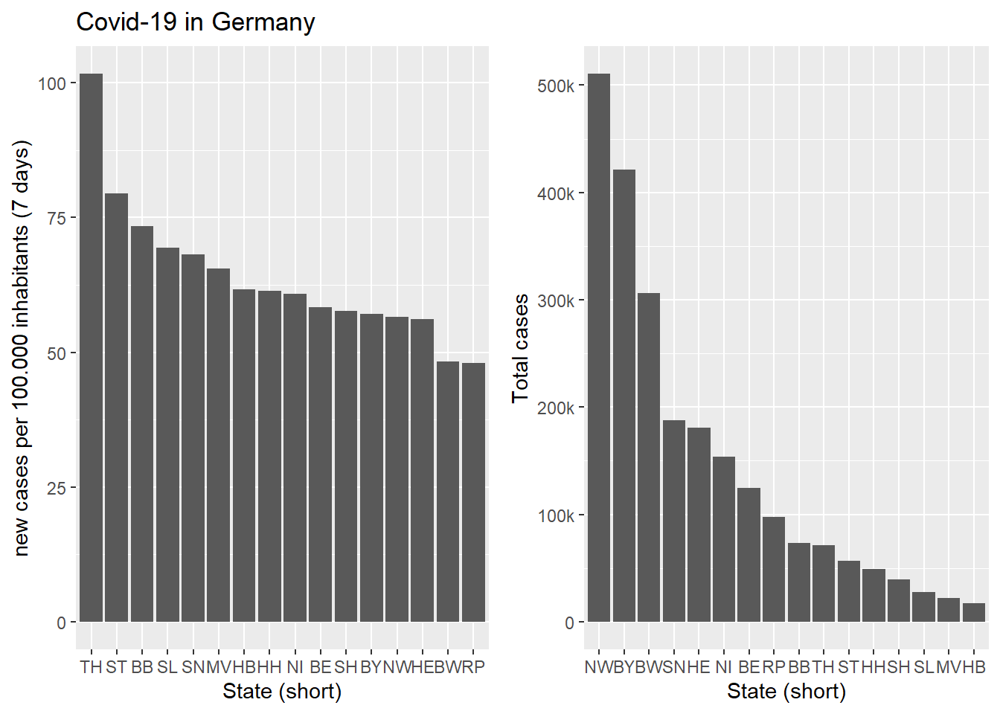

Hello again. Unfortunately exams are coming up very soon, which is why I was so inactive lately. I was working on a project the entire time, but couldn’t put as much effort in as I wanted to. But I will still post it anyway, because it has been too long since my last post.
On of the problems of today’s data driven world is, that the data constantly gets updated. So how can you assure, that you’re using the most up-to-date data? That’s where APIs come into play. I’m not going to explain what an API is and how it works, because I want to keep this post as short as possible and focus on working with APIs in R, but if you’re interested in learning more about APIs, you can follow this link to learn more about the topic.
I used this as my data source, as Covid-19 is (unfortunately) a relevant topic at the moment. Before starting, we have to start as usual: By loading packages.
#Loading packages
library(httr)
library(jsonlite)These two packages are necessary to access web data in the JSON-format.
#API request
dt <- GET("https://services7.arcgis.com/mOBPykOjAyBO2ZKk/arcgis/rest/services/Coronaf%C3%A4lle_in_den_Bundesl%C3%A4ndern/FeatureServer/0/query?where=1%3D1&outFields=*&outSR=4326&f=json")
dt## Response [https://services7.arcgis.com/mOBPykOjAyBO2ZKk/arcgis/rest/services/Coronaf%C3%A4lle_in_den_Bundesl%C3%A4ndern/FeatureServer/0/query?where=1%3D1&outFields=*&outSR=4326&f=json]
## Date: 2021-02-15 17:30
## Status: 200
## Content-Type: text/plain; charset=utf-8
## Size: 5.74 MBIn this step we’re requesting the data from the API using the GET() function, which is in the httr package. Then we can analyze the GET() output. As you can see, the “Status:” shows the number 200, which is what we want to see, as it corresponds to a successful attempt at getting the data.
In the next step we have to convert the data into the JSON-structure using the rawToChar() command from the jsonlite package.
datCov <- fromJSON(rawToChar(dt$content))
names(datCov)## [1] "objectIdFieldName" "uniqueIdField" "globalIdFieldName"
## [4] "geometryProperties" "geometryType" "spatialReference"
## [7] "fields" "features"After converting the data to the JSON structure we can further explore our data. This might take some trial and error, as I encountered some freezes when I tried to access the “wrong” data (i.e. not the actual data we’re looking for). So to reduce the risk of the site not deploying I will skip the detailed exploration of the JSON data.
So the data we want is saved in “features” of our datCov object and again has multiple types of data and information. To further extract the data we want we convert the “features” part to a list and finally convert our data into a data frame.
listCov19 <- datCov$features
dfCov19 <- as.data.frame(listCov19[[1]])Now we can also take our first look at the actual data we want to work with.
dim(dfCov19)## [1] 16 19head(dfCov19)## OBJECTID_1 LAN_ew_AGS LAN_ew_GEN LAN_ew_BEZ LAN_ew_EWZ
## 1 1 01 Schleswig-Holstein Land 2903773
## 2 2 02 Hamburg Freie und Hansestadt 1847253
## 3 3 03 Niedersachsen Land 7993608
## 4 4 04 Bremen Freie Hansestadt 681202
## 5 5 05 Nordrhein-Westfalen Land 17947221
## 6 6 06 Hessen Land 6288080
## OBJECTID Fallzahl Aktualisierung AGS_TXT GlobalID
## 1 15 39661 1.613344e+12 01 fc5ba936-c95c-432c-8a33-9eb2f30b660f
## 2 6 48983 1.613344e+12 02 0f3e860c-5181-4d3f-a421-1d51f50315ea
## 3 9 153651 1.613344e+12 03 3fd77024-c29b-4843-9be8-682ad48e60c9
## 4 5 16973 1.613344e+12 04 4132268b-54de-4327-ac1e-760e915112f1
## 5 10 510522 1.613344e+12 05 561d658f-3ee5-46e3-bc95-3528c6558ab9
## 6 7 180703 1.613344e+12 06 93277ac4-e8fc-48c7-8940-028dc2ed66af
## faelle_100000_EW Shape__Area Shape__Length Death cases7_bl_per_100k
## 1 1365.844 45737314117 2881496.1 1131 57.71801
## 2 2651.667 2089396055 418800.2 1196 61.44259
## 3 1922.173 129983613599 4008988.3 3845 60.91117
## 4 2491.625 1119156745 335717.7 312 61.65572
## 5 2844.574 87829361998 2648672.5 12118 56.56029
## 6 2873.739 52359125901 2148243.6 5460 56.09025
## cases7_bl death7_bl cases7_bl_per_100k_txt AdmUnitId
## 1 1676 8 57,7 1
## 2 1135 0 61,4 2
## 3 4869 14 60,9 3
## 4 420 3 61,7 4
## 5 10151 46 56,6 5
## 6 3527 16 56,1 6sapply(dfCov19, class)## OBJECTID_1 LAN_ew_AGS LAN_ew_GEN
## "integer" "character" "character"
## LAN_ew_BEZ LAN_ew_EWZ OBJECTID
## "character" "integer" "integer"
## Fallzahl Aktualisierung AGS_TXT
## "integer" "numeric" "character"
## GlobalID faelle_100000_EW Shape__Area
## "character" "numeric" "numeric"
## Shape__Length Death cases7_bl_per_100k
## "numeric" "integer" "numeric"
## cases7_bl death7_bl cases7_bl_per_100k_txt
## "integer" "integer" "character"
## AdmUnitId
## "integer"The data frame has 18 columns and 16 rows and contains various data about Covid-19 in Germany.
From here you can do whatever you want with the data. Use it for analysis or create plots like those two!

That’s all there is for this blogpost. Sorry again for not posting as much lately. University is more challenging at the moment than I had anticipated. But soon all of my exams will be over and I promise I will post more! Thank you for taking the time to read this post!
See you next time! -SN